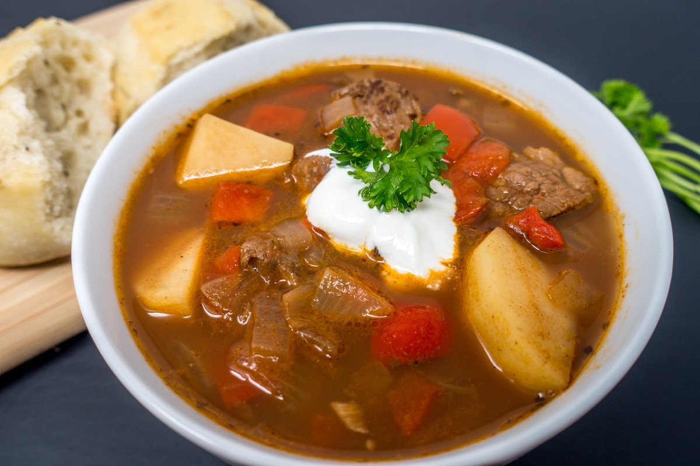

Goulash soup (Gulyás leves)

Description
The goulash soup is a traditional hungarian recipe, which is perfect for cold nights to feel warmer. In Hungary we traditionally make the soup outside in our garden with a cauldron. Somehow this ritual makes the goulash soup much more better.
Ingredients
- 2 medium onions
- 2 teaspoons butter or lard (preferred)
- 1 teaspoon caraway seeds
- 2 tablespoons paprika
- 1 ½ pound stewing beef trimmed and cut into 1" cubes
- 2 cups beef broth or water
- 3 carrots
- 2 potatoes
- salt and pepper
Steps
- In a large pot, melt butter and add onion. Cook till translucent. Stir in caraway seeds and paprika and mix well.
- Add beef to the onion mixture and cook until the beef is almost ready.
- Slowly add about ¼ cup of the beef broth to lift the brown bits off the bottom of the pan. Then add remaining broth, diced potatoes, carrots, salt and pepper.
- Stir and bring to a boil, cover, then reduce to a simmer for about 1 ½ -2 hours or until tender.